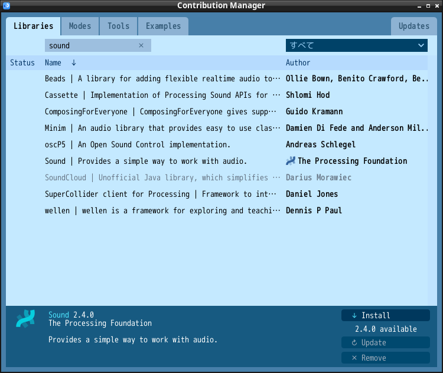

プログラミング言語における追加機能

import processing.sound.*;
SoundFile blip;
int radius = 120;
float x = 0;
float speed = 1.0;
int direction = 1;
void setup() {
size(440, 440);
ellipseMode(RADIUS);
blip = new SoundFile(this, "blip.wav");
x = width/2; // 中央からスタート
}
void draw() {
background(0);
x += speed * direction;
if ((x > width-radius) || (x < radius)) {
direction = -direction; // 進行方向
blip.play();
}
if (direction == 1) {
arc(x, 220, radius, radius, 0.52, 5.76); // 右向き
} else {
arc(x, 220, radius, radius, 3.67, 8.9); // 左向き
}
}
import processing.sound.*;
AudioIn mic;
Amplitude amp;
void setup() {
size(240, 440);
background(0);
// オーディ入力を有効化
mic = new AudioIn(this, 0);
mic.start();
// 振幅（音量）を分析するクラスをマイクに接続
amp = new Amplitude(this);
amp.input(mic);
}
void draw() {
noStroke();
fill(26, 76, 102, 10);
rect(0, 0, width, height);
// analyze() メソッドは0から1の値を返すので
// map() を使ってウィンドウサイズに合った値に変換
float diameter = map(amp.analyze(), 0, 1, 10, width);
// 音量を表す円を描く
fill(255);
ellipse(width/2, height/2, diameter, diameter);
}
import processing.sound.*;
SinOsc sine;
float freq = 400;
void setup() {
size(440, 440);
// サイン波発振器の動作開始
sine = new SinOsc(this); // 他に SawOsc, SqrOsc, TriOsc, ...
sine.play();
}
void draw() {
background(176, 204, 176);
// mouseXの値を周波数（20Hz〜440Hz）へ変換
float hertz = map(mouseX, 0, width, 20.0, 440.0);
sine.freq(hertz);
// 現在の周波数を基に波形を表示
stroke(26, 76, 102);
for (int x = 0; x < width; x++) {
float angle = map(x, 0, width, 0, TWO_PI * hertz);
float sinValue = sin(angle) * 120;
line(x, 0, x, height/2 + sinValue);
}
}
上記実行プログラムは mousePressed(), mouseReleased() を用いています．
PShape bot;
float x = 0;
void setup() {
size(720, 480);
bot = loadShape("robot1.svg");
frameRate(30);
}
void draw() {
background(0, 153, 204);
translate(x, 0);
shape(bot, 0, 80);
saveFrame("frames/SaveExample-####.tif");
x += 12;
if (frameCount > 60) {
exit();
}
}
import processing.pdf.*;
PShape bot;
void setup() {
size(600, 800, PDF, "Ex-13-5.pdf");
bot = loadShape("robot1.svg");
}
void draw() {
background(0, 153, 204);
for (int i = 0; i < 100; i++) {
float rx = random(-bot.width, width);
float ry = random(-bot.height, height);
shape(bot, rx, ry);
}
exit();
}
HashMap<String, Integer> fruits = new HashMap<String, Integer>();
void setup() {
fruits.put("apple", 200); // key と value を入力
fruits.put("orange", 30); // key と value を入力
fruits.put("peach", 400); // key と value を入力
noLoop();
}
void draw() {
println(fruits.size()); // HashMapのサイズ → 3
println(fruits.get("apple")); // key "apple" に対する value
for (String key : fruits.keySet()) { // for文で全てのkeyを対象に
println(key + ":" + fruits.get(key)); // key に対し value を出力
}
}
| key (String) | value (Integer) | "apple" | 200 | "orange" | 30 | "peach" | 400 |
|---|
import processing.sound.*;
HashMap<Character, SinOsc> osc = new HashMap<Character, SinOsc>();
HashMap<Character, Float> freq = new HashMap<Character, Float>();
PFont font;
void setup() {
size(600, 100);
font = createFont("ipag.ttf", 24); // 日本語フォント
textFont(font);
// 音階を定義
freq.put('a', 261.63); // ド 261.63Hz
freq.put('s', 293.66); // レ 293.66Hz
freq.put('d', 329.63); // ミ 329.63Hz
freq.put('f', 349.23); // ファ 349.23Hz
freq.put('j', 392.00); // ソ 392.00Hz
freq.put('k', 440.00); // ラ 440.00Hz
freq.put('l', 493.88); // シ 493.88Hz
freq.put(';', 523.25); // 高いド 523.25Hz
// 各キー用の発振器を作る
for (char k : freq.keySet()) {
SinOsc s = new SinOsc(this);
s.freq(freq.get(k));
s.amp(0.3);
osc.put(k, s);
}
}
void draw() {
background(0);
fill(255);
textSize(20);
text("a s d f j k l ; = ド レ ミ ファ ソ ラ シ ド", 40, 50);
}
void keyPressed() {
if (osc.containsKey(key)) { // osc のキー一覧に key が含まれるなら
osc.get(key).play();
}
}
void keyReleased() {
if (osc.containsKey(key)) { // osc のキー一覧に key が含まれるなら
osc.get(key).stop();
}
}
| key (Character) | value (Float) | 'a' | 261.63 | 's' | 293.66 | 'd' | 329.63 | 'f' | 349.263 | 'j' | 392.00 | 'k' | 440.00 | 'l' | 493.88 | ';' | 523.25 |
|---|
| key (Character) | value (SinOsc) | 'a' | ドの発振器 | 's' | レの発振器 | 'd' | ミの発振器 | 'f' | ファの発振器 | 'j' | ソの発振器 | 'k' | ラの発振器 | 'l' | ㇱ発振器 | ';' | 高いドの発振器 |
|---|
import processing.sound.*;
HashMap<Character, SinOsc> piano = new HashMap<Character, SinOsc>();
PFont font;
void setup() {
size(600, 200);
font = createFont("ipag.ttf", 24);
textFont(font);
// 鍵盤の定義（キー → 周波数）
addKey('a', 261.63); // C
addKey('s', 293.66); // D
addKey('d', 329.63); // E
addKey('f', 349.23); // F
addKey('j', 392.00); // G
addKey('k', 440.00); // A
addKey('l', 493.88); // B
addKey(';', 523.25); // C
}
// 「キーと周波数」を1本の鍵盤として登録
void addKey(char k, float f) {
SinOsc s = new SinOsc(this);
s.freq(f);
s.amp(0.3);
piano.put(k, s);
}
void draw() {
background(0);
fill(255);
text("a s d f j k l ; = ド レ ミ ファ ソ ラ シ ド", 40, 100);
}
void keyPressed() {
if (piano.containsKey(key)) {
piano.get(key).play();
}
}
void keyReleased() {
if (piano.containsKey(key)) {
piano.get(key).stop();
}
}
配列からHashMapを作成できないか？
import processing.sound.*;
char[] keys = {'a', 's', 'd', 'f', 'j', 'k', 'l', ';'};
float[] freqs = {261.63, 293.66, 329.63, 349.23, 392.00, 440.00, 493.88, 523.25};
HashMap<Character, SinOsc> piano = new HashMap<Character, SinOsc>();
PFont font;
void setup() {
size(600, 100);
font = createFont("ipag.ttf", 24);
textFont(font);
// 鍵盤の定義（キー → 周波数）
for (int i = 0; i < keys.length; i++) {
SinOsc s = new SinOsc(this);
s.freq(freqs[i]);
s.amp(0.3);
piano.put(keys[i], s);
}
}
void draw() {
background(0);
fill(255);
text("a s d f j k l ; = ド レ ミ ファ ソ ラ シ ド", 40, 50);
}
void keyPressed() {
if (piano.containsKey(key)) {
piano.get(key).play();
}
}
void keyReleased() {
if (piano.containsKey(key)) {
piano.get(key).stop();
}
}